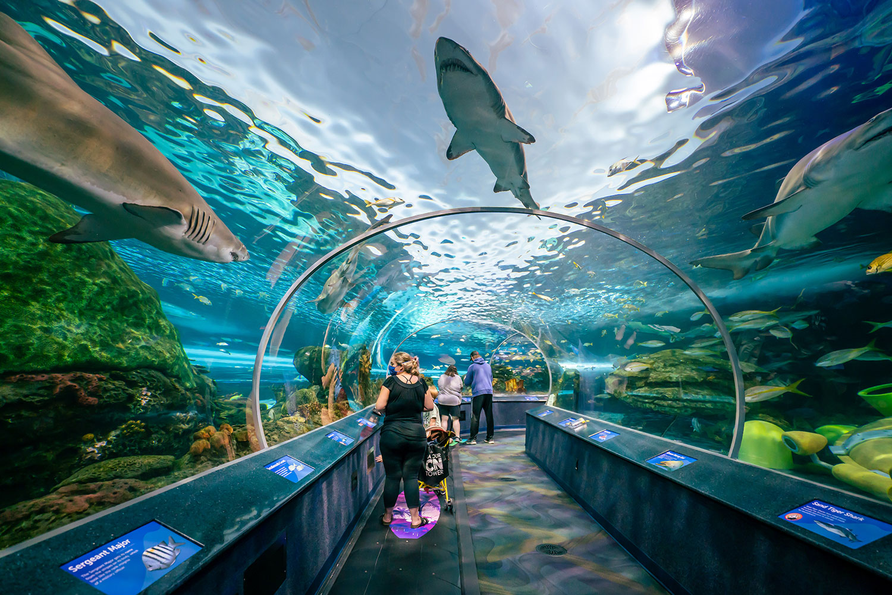

CN Tower

Of course a trip to Toronto would not be complete without making a stop at the CN Tower! One of the most recognizable pieces of architecture in Toronto,
this structure stands as one of the tallest buildings in the world. Inside, visitors can enjoy a variety of thrilling experiences.
The main attraction is the observation deck, which sits at 1,136 feet and offers breathtaking views of the city and Lake Ontario.
Fun fact, the “CN” in CN Tower stands for Canadian National, the railroad company that built the tower between 1973 and 1976.
Ripley's Aquarium

Located in downtown Toronto right next to the CN Tower, this aquarium is one of three aquariums owned by Ripley Entertainment.
This exhibit holds more than 20,000 exotic sea and freshwater aquatic animals. This aquarium features North America's longest underwater
viewing tunnel with more than 5.7 million liters of water. Throughout the aquarium, visitors can enjoy daily feeding shows and educational presentations.
The immersive environments combined with stunning visual displays, makes Ripley's Aquarium a must-visit destination for anyone exploring Toronto.
Yonge-Dundas Square

Yonge-Dundas Square is a bustling hub at the heart of Toronto, often referred to as the city's vibrant “town square.” Located at the intersection of
Yonge Street and Dundas Street, this lively public space is surrounded by shops, restaurants, and theaters, making it a favorite gathering spot for locals and tourists alike.
This area is known for its bright digital billboards, events, and street performances, creating an electric atmosphere that captures the energy of the city.
CF Toronto Eaton Centre
This mall features a stunning glass-ceilinged atrium and expansive selection of over 230 stores.
From high-end fashion brands to beloved local stores, there's something for every shopper. The vibrant atmosphere is enhanced by extensive dining options,
where visitors can enjoy everything from quick bites to sit-down meals, making it a great place to take a break after a day of shopping.
Just located a few steps away from Yonge-Dundas Square, making it an ideal stop for anything exploring downtown Toronto.